Featured Projects
A showcase of software applications and hardware builds
| ArkLegacy | Start-Up Website
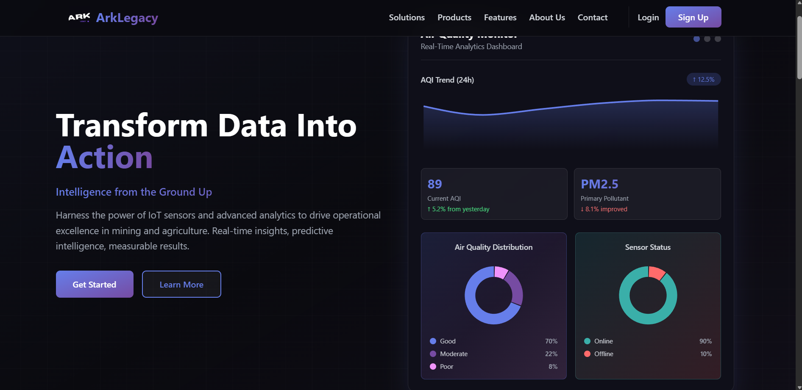
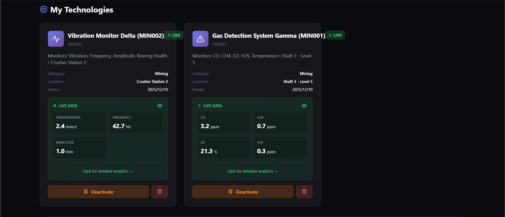
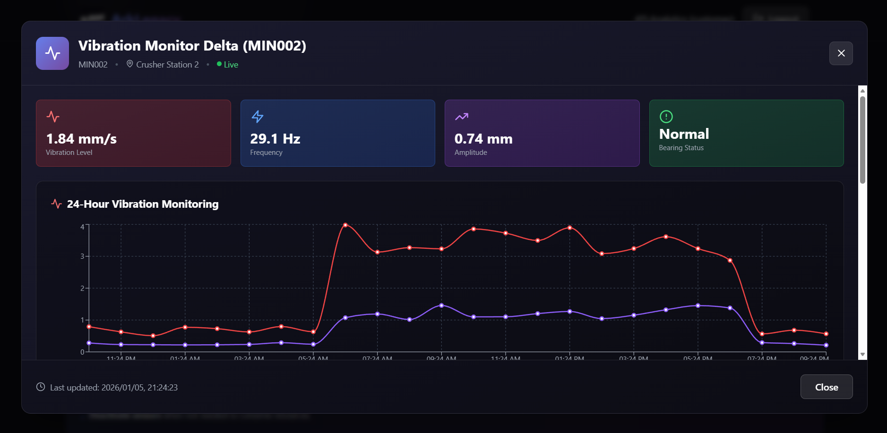
Project Outcomes (on-going)
Currently in development, ArkLegacy will be a comprehensive IoT analytics platform targeting mining and agricultural operations, set to transform real-time sensor data streams into structured, actionable insights for operational decision-making. The platform will combine hardware sensor integration with advanced data visualisation dashboards, enabling predictive maintenance scheduling and continuous environmental condition monitoring once deployed. The backend will process time-series data through analytics pipelines built on a Python and JavaScript stack, drawing on the data engineering principles being developed through MSc research into embedded systems and web-integrated analytics. On the frontend, the goal is to deliver an intuitive interface designed specifically for field operators, presenting complex telemetry in interpretable visual formats that require no deep technical knowledge to use. Ultimately, this project will serve as a direct application of the dissertation research focus, demonstrating how embedded systems and cloud-based analytics pipelines can support data-driven decision-making in resource-intensive industries at scale.
| Royal Priesthood | Clothing Website


A complete full-stack e-commerce platform built for Royal Priesthood, a faith-inspired premium streetwear brand, developed from the ground up with a focus on performance, security, and maintainable architecture. The frontend is crafted using HTML5, CSS3, and Vanilla JavaScript with carefully selected Google Fonts (Bebas Neue, Cormorant Garamond) to reinforce the brand's premium identity, while the backend is powered by Node.js and Express.js through a RESTful API architecture. User authentication is secured with bcrypt password encryption and session management, and all product and customer data is persisted in a relational SQL database with structured query optimisation skills directly developed through my Teaching Assistant role where I facilitated data retrieval and SQL query optimisation for 100+ students. The codebase follows an MVC-style separation of concerns, with modular JavaScript files (products.js, cart.js, auth.js, main.js) ensuring scalability and straightforward onboarding for collabourating developers. This project reflects my ability to deliver commercial-grade software solutions for real clients, bridging engineering rigour with practical software development.
Load Profile App | Catalogue Method
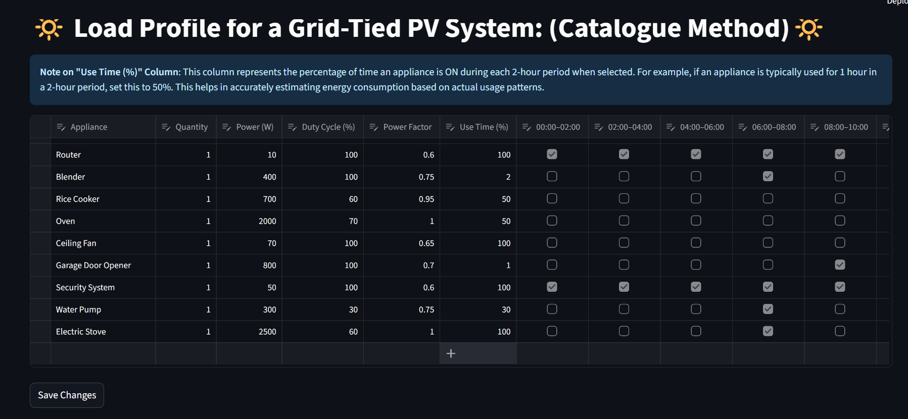
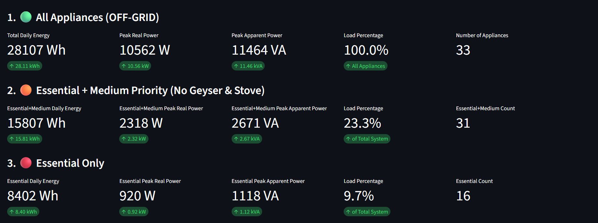
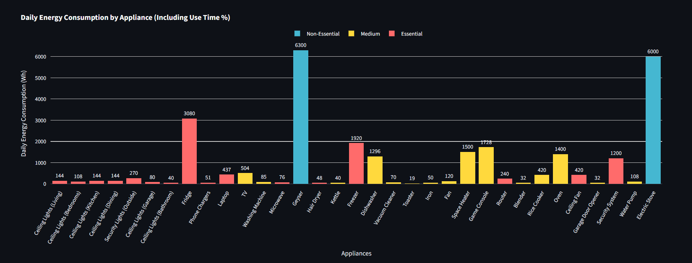
Project Outcomes:
A Python-based Streamlit web application that automates residential electrical load profile generation using the Catalogue Method a systematic approach to estimating household energy demand by cataloguing appliance types, usage patterns, and rated power values. The application allows users to interactively define household appliance inventories and operating schedules, dynamically computing and visualising 24-hour power demand curves. Validation was performed against physically measured household loads using a Fluke power quality meter, achieving power estimation accuracy within 5–8% of real readings a commercially acceptable margin for residential solar PV sizing and demand forecasting. Built using Pandas and Matplotlib for data handling and visualisation, the tool reflects my broader expertise in data-driven engineering workflows where Python analytics pipelines translate raw measurements into actionable design insights. This project has direct applications in South Africa's renewable energy transition, providing accessible tooling for engineers and consultants designing off-grid and grid-tied PV systems for residential clients.
Hand Movement Distance Measurement System for Stroke Rehabilitation

Project Outcomes:
Developed a precision hand movement measurement system for post-stroke rehabilitation, enabling physiotherapists and patients to objectively track motor recovery progress through quantifiable distance and motion metrics. The system achieved 95% measurement accuracy with a cumulative measurement error of only 2.92% ± 0.0489%, demonstrating the reliability necessary for clinical-grade rehabilitation feedback in real-world physiotherapy settings. A key design constraint was affordability: the complete system was fabricated at a cost of R420, making it viable for deployment in resource-limited public healthcare and community rehabilitation environments where expensive commercial motion capture systems are inaccessible. The hardware architecture integrates time-of-flight and inertial sensors with embedded signal processing on a microcontroller platform, with firmware written in C to achieve the low-latency, high-accuracy measurement pipeline required. This project exemplifies the intersection of embedded systems engineering and healthcare impact, demonstrating how thoughtful hardware design can directly improve quality of life outcomes for stroke survivors in underserved communities.
High-Gain 2.4 GHz Yagi-Uda Antenna for Wi-Fi Range Extension
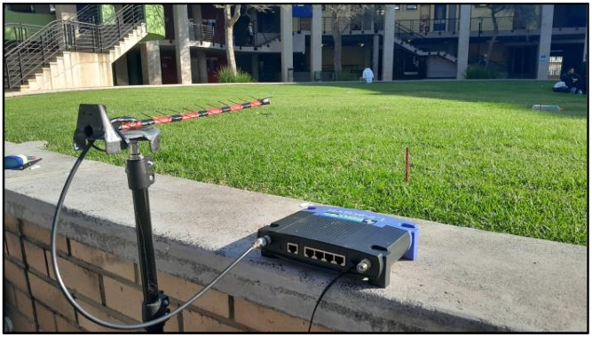
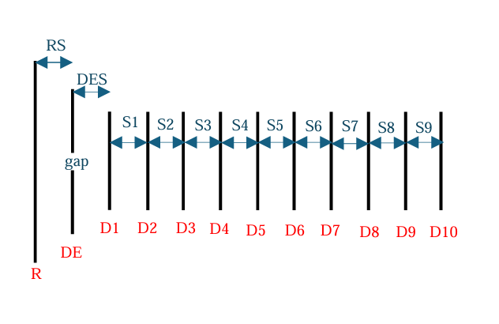
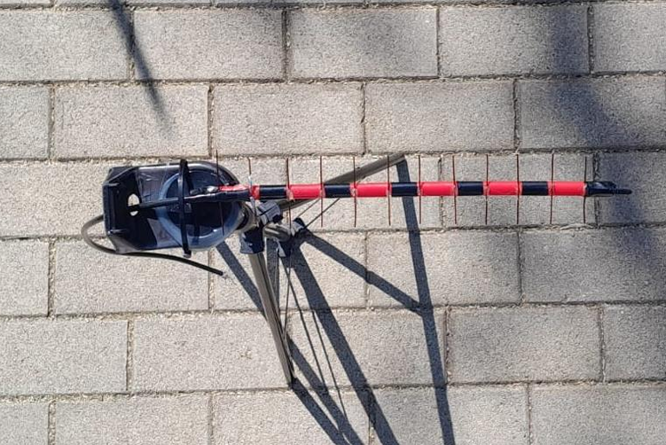
Project Outcomes:
Designed, simulated, and physically fabricated a directional Yagi-Uda antenna optimised for operation at 2.4 GHz, targeting Wi-Fi range extension applications in environments where standard omnidirectional routers deliver insufficient coverage. The antenna achieved a realised gain of 9 dBi, compared to the 2 dBi gain of a standard omnidirectional router antenna representing a 7 dB improvement in signal strength and a significant increase in effective communication range in the beam direction. The design process was carried out using 4-NEC2 electromagnetic simulation software to iteratively optimise element spacing, driven element length, and reflector geometry before physical fabrication, ensuring simulated performance closely matched measured results. Antenna construction used precision-cut aluminium elements mounted on a non-conductive boom, with impedance matching designed to minimise return loss at the feed point for maximum power transfer. This project reflects hands-on application of HF Techniques coursework and demonstrates the complete antenna engineering workflow from theoretical design and electromagnetic simulation through to physical fabrication, measurement, and performance validation.
Demand-Side Management Analysis Program: Instantaneous vs Electric Water Heaters
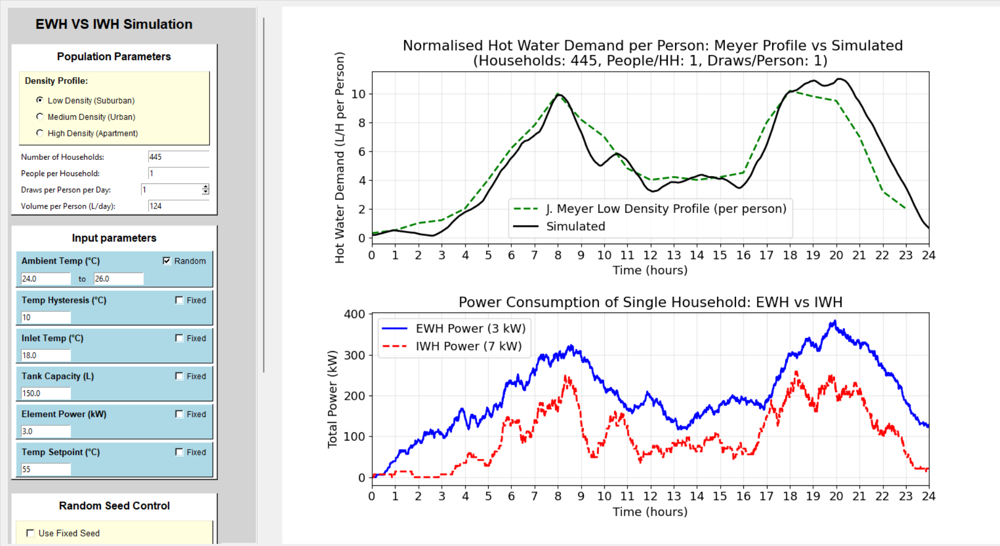
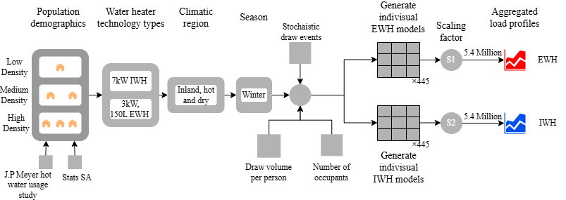
Project Outcomes:
Developed a Python-based GUI simulation program to model and compare the national-scale demand-side management (DSM) impact of replacing conventional electric storage water heaters with instantaneous (tankless) alternatives across South Africa's residential sector. The simulation modelled consumption behaviour across 5.4 million installations using statistical load profiles derived from real household usage data, computing aggregate demand curves and energy consumption totals under both heater configurations. Results projected a peak demand reduction of 470 MW equivalent to half a stage of Eskom load shedding alongside 32% daily energy savings amounting to 35.16 GWh per day, quantifying the national grid relief achievable through targeted appliance-level DSM interventions. Built using Python with Pandas, NumPy, and Matplotlib, the program implements a data pipeline from input parameters through statistical modelling to visualised output, making the analysis accessible and reproducible for energy policy stakeholders. This project directly addresses South Africa's ongoing energy crisis by providing evidence-based, data-driven analysis to inform government and utility-level decisions around residential appliance standards and incentive programmes.
Telecommunications Cabinet Smart Battery Theft Prevention System


Project Outcomes:
Fabricated an intelligent embedded security system for telecommunications infrastructure cabinets, addressing the widespread theft of backup batteries from cell towers and telecoms sites a major operational and financial challenge for South African network operators. Developed during vacation work at Rain South Africa, the system implements a predictive classification model that achieved 95% accuracy in distinguishing between authorised maintenance personnel and intruders, with a detection and alert response time of under 5 seconds. The machine learning classification model was trained on sensor fusion data combining PIR motion detection, vibration sensing, and access pattern analysis, enabling the system to differentiate between routine authorised access and suspicious intrusion behaviour with high confidence. Hardware integration involved embedded firmware development in C, sensor interfacing, and a wireless alerting module that pushes real-time notifications to a remote monitoring dashboard, enabling operators to respond to intrusion events immediately. This project also involved cross-functional collabouration to produce comprehensive technical documentation and project specifications work that directly contributed to reduced engineer onboarding time, as acknowledged during the Rain South Africa vacation programme.
| ArkLegacy | Start-Up Website
Project Outcomes (on-going)
Currently in development, ArkLegacy will be a comprehensive IoT analytics platform targeting mining and agricultural operations, set to transform real-time sensor data streams into structured, actionable insights for operational decision-making. The platform will combine hardware sensor integration with advanced data visualisation dashboards, enabling predictive maintenance scheduling and continuous environmental condition monitoring once deployed. The backend will process time-series data through analytics pipelines built on a Python and JavaScript stack, drawing on the data engineering principles being developed through MSc research into embedded systems and web-integrated analytics. On the frontend, the goal is to deliver an intuitive interface designed specifically for field operators, presenting complex telemetry in interpretable visual formats that require no deep technical knowledge to use. Ultimately, this project will serve as a direct application of the dissertation research focus, demonstrating how embedded systems and cloud-based analytics pipelines can support data-driven decision-making in resource-intensive industries at scale.
| Royal Priesthood | Clothing Website
A complete full-stack e-commerce platform built for Royal Priesthood, a faith-inspired premium streetwear brand, developed from the ground up with a focus on performance, security, and maintainable architecture. The frontend is crafted using HTML5, CSS3, and Vanilla JavaScript with carefully selected Google Fonts to reinforce the brand's premium identity, while the backend is powered by Node.js and Express.js through a RESTful API. User authentication is secured with bcrypt password encryption and session management, with all data persisted in a relational MySQL database. The codebase follows an MVC-style separation of concerns, with modular JavaScript files ensuring scalability and straightforward onboarding for collabourating developers. This project reflects my ability to deliver commercial-grade software solutions for real clients, bridging engineering rigour with practical full-stack development.
Load Profile App | Catalogue Method
Project Outcomes:
A Python-based Streamlit web application that automates residential electrical load profile generation using the Catalogue Method, validated against Fluke power quality meter readings with 5–8% accuracy. Built using Pandas and Matplotlib for data handling and visualisation, the tool enables solar PV sizing and demand forecasting for engineers and consultants. Direct applications include South Africa's renewable energy transition, providing accessible tooling for off-grid and grid-tied residential PV system design.
Demand-Side Management Analysis Program
Project Outcomes:
National-scale simulation across 5.4 million installations projected a 470 MW peak demand reduction and 32% daily energy savings (35.16 GWh/day), providing evidence-based analysis to inform South African energy policy. The Python GUI application implements a data pipeline from statistical load modelling through to visualised output using Pandas, NumPy, and Matplotlib.
Single-Channel EMG Data Acquisition System for Prosthetic Control
Project Outcomes:
Designed a full EMG data acquisition pipeline covering signal capture, noise filtering, and conditioning at an optimised cost of R2,548.21, achieving 95.33% signal capture accuracy (4.67% error). The system bridges hardware engineering and machine learning, producing structured output suitable for downstream prosthetic limb classification models.
Hand Movement Distance Measurement System for Stroke Rehabilitation
Project Outcomes:
Achieved 95% measurement accuracy (cumulative error 2.92% ± 0.0489%) in a clinical-grade rehabilitation feedback system fabricated at R420 accessible for resource-limited healthcare settings. Embedded firmware in C drives time-of-flight and inertial sensors through a low-latency signal processing pipeline on a microcontroller platform.
High-Gain 2.4 GHz Yagi-Uda Antenna
Project Outcomes:
Fabricated a directional antenna achieving 9 dBi realised gain a 7 dB improvement over a standard omnidirectional router. Designed and iteratively optimised using 4-NEC2 electromagnetic simulation before physical fabrication with precision-cut aluminium elements and impedance-matched feed for maximum power transfer.
Smart Battery Theft Prevention System
Project Outcomes:
Achieved 95% accuracy distinguishing intruders from authorised personnel with under 5-second response time. The ML classification model fuses PIR, vibration, and access pattern data; embedded firmware in C handles sensor interfacing and wireless alerting to a remote monitoring dashboard developed during vacation work at Rain South Africa.